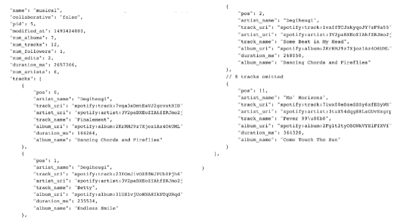
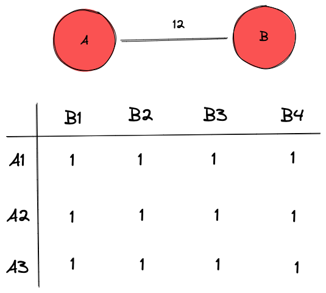
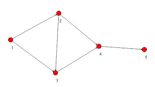
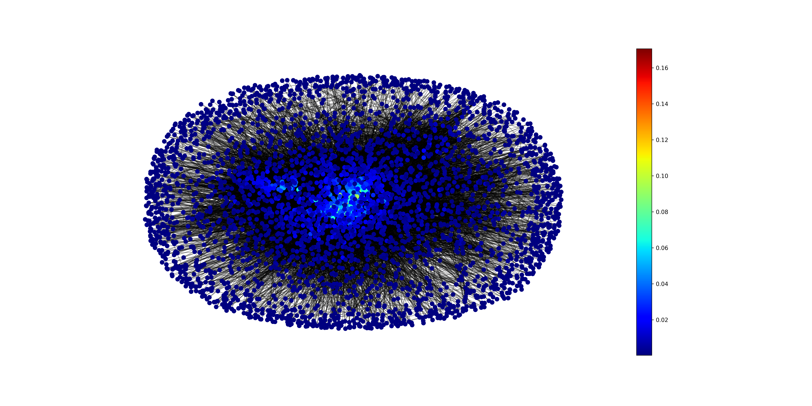
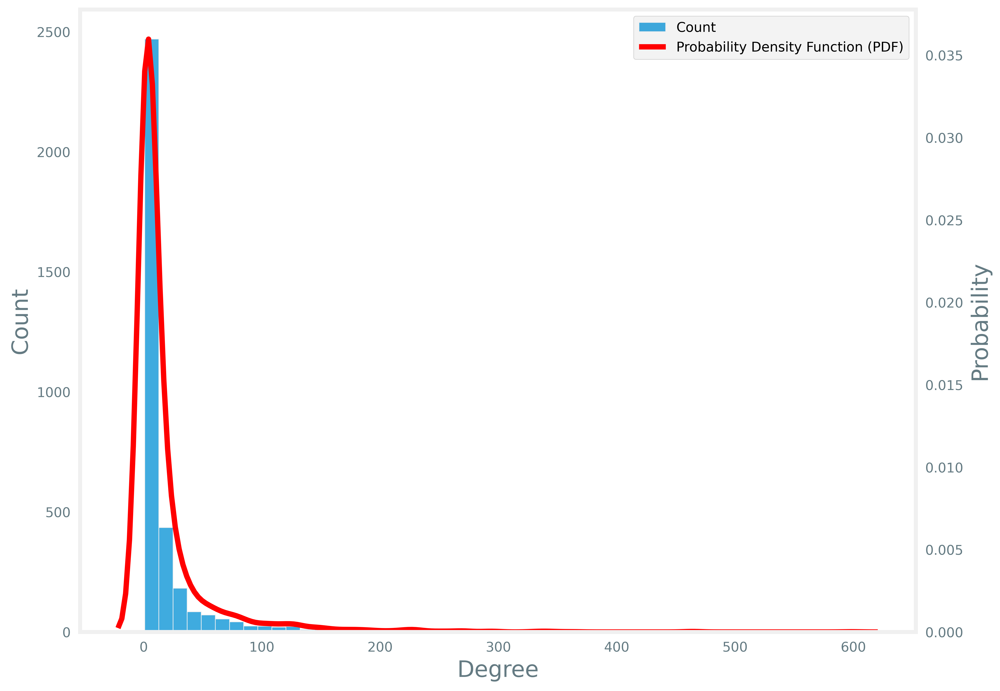

No ano de 2018, o Spotify disponibilizou um dataset com 1.000.000 de playlists em uma competição de machine learning, objetivando melhorar seu algoritmo de recomendação. O dataset contém o nome da música, álbum, artista e vários outros parâmetros de playlists criadas por usuários da plataforma entre 2010 e 2017.
Nesse trabalho, diferente da competição, não temos como objetivo gerar algoritmos de classificação, mas sim, analisar a rede de co-ocorrência gerada por essas playlists. Em particular, será analisada a rede de co-ocorrência entre os artistas das playlists, ou seja, imagine a seguinte playlist:

No arquivo JSON acima, no campo "tracks", temos as músicas e seus respectivos artistas. Em nossa modelagem, os artistas de uma mesma playlist se relacionam entre si, sendo contada quantas vezes essa relação ocorre, formando o peso dessa relação. Por exemplo, se em uma playlist um artista A aparece três vezes e nessa mesma playlist um artista B aparece quatro vezes, esses artistas terão uma relação de peso 12, como demonstrado abaixo:

Nesse contexto, algumas atividades foram propostas na análise dessa rede:
Nos próximos passos, iremos realizar cada uma dessas atividades, detalhando todo processo.
Para alcançarmos nosso objetivo de gerar uma rede de co-ocorrência, precisamos planejar uma forma de realizá-lo, a partir do arquivo JSON disponibilizado. A solução proposta foi:
A excentricidade pode ser definida como a distância entre um nó específico e o nó mais afastado onde se pode chegar partindo do nó em questão.

Na rede acima, por exemplo, a excentricidade do nó 1 é igual a 3, uma vez que essa é a menor distância entre o nó 1 e o nó 5, que é o mais distante. Note que quanto menor a excentricidade de um nó, mais próximo dos outros nó ele está, por exemplo, no caso da excentricidade igual a um, esse nó está conectado a todos os outros nós da rede.
Na rede estudada, a sua distribuição em relação a excentricidade é representada na imagem abaixo:

O diâmetro dessa rede vale 9, ou seja, esse valor é a maior distância entre dois pares, percorrendo o menor caminho. Dessa forma, os nós periféricos da rede, possuem sua excentricidade igual ao diâmetro, e são eles:
'10,000 Maniacs', '65daysofstatic', '9 Theory', 'Apparat', 'Blue Wednesday', 'Chambers', 'Cubicolor', 'Message To Bears', 'Super Duper', 'Tom Day', 'Abigail Zsiga', 'Adam Wheatley', 'Chelsea Moon & The Franz Brothers', 'Chelsea Moon & Uncle Daddy', 'Dave Hunt', 'David Potter', 'Jadon Lavik', 'Katy Kinard', 'Page CXVI', 'Sovereign Grace Music', 'The Enfield Hymn Sessions', 'The Outliers', 'Wayfarer', 'Rosario Dawson', 'Vybz Kartel', 'Amy B', 'Anime Kei', 'Kaleptik', 'Linked Horizon', 'NateWantsToBattle', 'PelleK', 'dj-Jo', 'Amethystium', 'Arcangelo Corelli', 'Costumbre', 'Austin Stone Worship', 'Bacilos', 'Four Tet', 'Südwestdeutsches Kammerorchester', 'Cesar Benito', 'Color Therapy', 'Sierra Kidd', 'The Love Bülow', 'Tonbandgerät', 'Völkerball', 'Jackie Evancho', 'David Lee Garza', 'Eddie Gonzalez', 'Elsa Garcia', 'La Mafia', 'La Tropa F', 'Michael Salgado', 'Elida Reyna Y Avante', 'Gary Hobbs', 'La Diferenzia', 'La Fiebre', 'Ram Herrera', 'Fama', 'George Frideric Handel', 'Giacomo Puccini', 'Michael Convertino', 'Grupo Pegasso', 'Inkieto', 'Obzesion', 'Solido', 'Vos Veis', 'Voz Veis', 'Los Igualados', 'Los Traileros Del Norte', 'Los Herederos De Nuevo León', 'Paco Barrón y sus Norteños Clan', 'Tropical Panamá', 'Traditional', 'Random Forest'.
Por outro lado, o raio da rede é a menor distância entre dois pares, percorrendo o menor caminho possível. Nessa rede, o raio vale 5. E, os nós que possuem a mesma excentricidade que o raio, são chamadas de nós centrais. São eles:
'Big Sean', 'Drake', 'Future', 'Kanye West', 'Kendrick Lamar', 'Rae Sremmurd', 'Adele', 'Ariana Grande', 'Beyoncé', 'Bruno Mars', 'Calvin Harris', 'Chris Brown', 'Coldplay', 'David Guetta', 'Demi Lovato', 'Ed Sheeran', 'Ellie Goulding', 'Eminem', 'Fall Out Boy', 'Flo Rida', 'JAY Z', 'Jason Derulo', 'Justin Bieber', 'Justin imberlake', 'Katy Perry', 'Kesha', 'Lady Gaga', 'Maroon 5', 'Michael Jackson', 'Miley Cyrus', 'Nelly', 'One Direction', 'OneRepublic', 'Panic! At The Disco', 'Rihanna', 'The Black Eyed Peas', 'B.o.B', 'DJ Khaled', 'Fetty Wap', 'G-Eazy', 'Imagine Dragons', 'J. Cole', 'Kid Cudi', 'Lil Wayne', 'Machine Gun Kelly', 'Major Lazer', 'Nicki Minaj', 'Pitbull', 'Post Malone', 'The Chainsmokers', 'The Weeknd', 'Zedd', 'Twenty One ilots', 'Alessia Cara', 'Hailee Steinfeld', 'Lorde', 'Selena Gomez', 'Shawn Mendes', The Script', 'DJ Snake', 'Mike Posner', 'Kygo', 'Daft Punk', 'Macklemore & Ryan ewis', 'Avicii', 'DNCE', 'Fifth Harmony', 'Halsey', 'Meghan Trainor', 'Nick Jonas', 'Sia', 'Tove Lo', 'ZAYN', 'Galantis', 'Martin Garrix'.
Note que os nós centrais são nós mais "importantes" na rede, uma vez que estão mais próximos de todos os outros nós da rede.
O grau de um nó, ou degree em inglês, é uma das propriedades mais requisitadas na análise de redes, e, nada mais é do que a quantidade de arestas que chegam nele, ou o número de nós que se conectam a ele.
Em nosso caso de estudo, o grafo destacando o grau dos nós, pode ser observado na figura abaixo:
Top 10
- Drake - 598
- Ed Sheeran - 465
- Rihanna - 463
- Kanye West - 363
- Chris Brown - 347
- Eminem - 341
- Justin Bieber - 336
- The Weeknd - 330
- Maroon 5 - 297
- Kendrick Lamar - 295
A medida da centralidade do grau (degree centrality) é a normalização do valor do grau dos nós para valores entre 0 e 1. Portanto, ela mede exatamente a mesma propriedade do degree, sendo agora com valores normalizados. E, por esse motivo, é esperado que o grafo que representa essa propriedade, seja similar ao apresentado pelo atributo grau (degree).

Observe, também, que a lista dos top 10 dessa propriedade, terá exatamente os mesmos artistas apresentados pelo atributo anterior.
Top 10
- Drake - 0.170613
- Ed Sheeran - 0.132668
- Rihanna - 0.132097
- Kanye West - 0.103566
- Chris Brown - 0.099001
- Eminem - 0.097290
- Justin Bieber - 0.095863
- The Weeknd - 0.094151
- Maroon 5 - 0.084736
- Kendrick Lamar - 0.084165
Uma outra forma de medir a centralidade de um nó é determinando o quão próximo ele está dos outros nós. Essa medida pode ser feita, somando todas as distâncias desse nó para os outras. Pode se dizer que o "Closeness Centrality" mede a média das distâncias para todos os outros vértices.

Top 10
- Drake - 0.441603
- Ed Sheeran - 0.426710
- Rihanna - 0.424386
- Justin Bieber - 0.409463
- Eminem - 0.408270
- Kanye West - 0.407890
- Maroon 5 - 0.406754
- The Weeknd - 0.406660
- Twenty One Pilots - 0.404968
- Beyoncé - 0.404734
Muitos fenômenos que acontecem em redes são baseados em processos difusos. Exemplos incluem a transmissão da informação através da internet, o tráfego de produtos através de portos, ou a transmissão de uma epidemia por meio do contato físico entre indivíduos. Esses exemplos, criaram a necessidade o surgimento de uma outra noção de centralidade, chamada de "betweenness". Nessa medida, um nó é mais central quanto mais frequente ele está envolvido nos processos.

Top 10
- Drake - 0.130344
- Ed Sheeran - 0.099335
- Twenty One Pilots - 0.056680
- Banda Sinaloense MS de Sergio Lizárraga - 0.048280
- Pitbull - 0.047606
- Rihanna - 0.044441
- Michael Jackson - 0.041369
- BTS - 0.039215
- Getter - 0.035893
- Bon Iver - 0.033086
Em várias circunstâncias a importância de um nó aumenta quando esse nó apresenta conexões com outros nós importantes. Por exemplo, imagine que você tenha somente um amigo no mundo, entretanto, esse amigo é Cristiano Ronaldo. Então, dependendo do tipo de modelagem dessa rede, você também pode ser considerado uma pessoa importante.

Top 10
- Drake - 0.149609
- Rihanna - 0.146182
- Kanye West - 0.130860
- Chris Brown - 0.125971
- Justin Bieber - 0.125508
- Ed Sheeran - 0.1228947.
- The Weeknd - 0.122755
- Eminem - 0.121230
- Beyoncé - 0.115985
- Bruno Mars - 0.115708
Em nossa análise bivariada, relacionamos o grau dos nós (degree) com a quantidade ou sua probabilidade. Em outras palavras, através desse gráfico, podemos tem uma ideia de como está a distribuição dos graus dessa rede.

Observe acima, que a grande maioria dos nós possuem um grau menor do que 15, e, apesar de haver nó com grau 598, pouquíssimos nós tem mais que grau 100.
Através da análise multivariada, percebe-se relações positivas entre algumas propriedades de centralidade nessa rede, ou seja, se uma propriedade aumenta a outra também aumenta. A exemplo disso, é possível ver claramente essa relação entre degree e eigenvector, degree e closeness, eigenvector e closeness.

O "k-core" de uma rede é um subconjunto de seus nós, no qual todos nós têm, pelo menos, k conexões um com o outro. Por sua vez, o "k-shell", são os nós que pertencem a "casca" de elementos com k conexões. Perceba, no caso de estudo abaixo, que utilizamos o parâmetro de 56-core para encontrar o core mais profundo. E, para encontrar os elementos da segunda camada mais profunda, utilizamos o "55-shell", pois se utilizassemos o 55-core, englobaria também os nós da última camada.

55-shell artists: Yo Gotti, Sam Hunt, Frank Ocean, Desiigner, Daft Punk, DRAM, K CAMP
56-core artists: Kendrick Lamar, Selena Gomez, One Direction, T.I., Flo Rida, Ellie Goulding, Mike Posner, Zara Larsson, Machine Gun Kelly, Pitbull, Bruno Mars, Usher, 2 Chainz, Lady Gaga, Jeremih, Lorde, J. Cole, Post Malone, Fetty Wap, Big Sean, David Guetta, Imagine Dragons, The Chainsmokers, Russ, Justin Timberlake, Meek Mill, Twenty One Pilots, Britney Spears, ZAYN, Kodak Black, Drake, Rae Sremmurd, JAY Z, Sage The Gemini, Young Thug, Flume, Fergie, Major Lazer, Kygo, Kesha, Travis Scott, Miley Cyrus, DJ Khaled, Tove Lo, Maroon 5, Kanye West, French Montana, Beyoncé, Shawn Mendes, Taylor Swift, Khalid, Coldplay, Jason Derulo, B.o.B, Katy Perry, Rihanna, Sia, Ty Dolla \$ign, Chris Brown, Alessia Cara, Sam Smith, The Black Eyed Peas, Lil Uzi Vert, G-Eazy, Tyga, Michael Jackson, Meghan Trainor, Adele, Future, Migos, T-Pain, Gucci Mane, The Weeknd, Trey Songz, Justin Bieber, Logic, Fall Out Boy, Ed Sheeran, Halsey, Lil Wayne, Nicki Minaj, Childish Gambino, Wiz Khalifa, Demi Lovato, Kid Ink, Charlie Puth, Bryson Tiller, A$AP Rocky, Mac Miller, ScHoolboy Q, Kid Cudi, Hailee Steinfeld, Fifth Harmony, Panic! At The Disco, Eminem, 50 Cent, Kevin Gates, YG, Calvin Harris, Zedd, Nelly, OneRepublic, Chance The Rapper, Ariana Grande, DJ Snake.
O gephi é um software open-source para análise e visualização de redes. Através do deploy com o gephi, é possível visualizar, manipular, obter métricas da rede de forma muito mais fácil e rápida. No link abaixo, é possível acessar ao deploy da rede estudada. É interessante observar a cor nessa representação, ela representa as comunidades, que é uma métrica que agrupa "clusters" em uma rede. É possível também, no mesmo link, filtrar a rede por comunidades, além de analisar a rede ego de um nó específico.